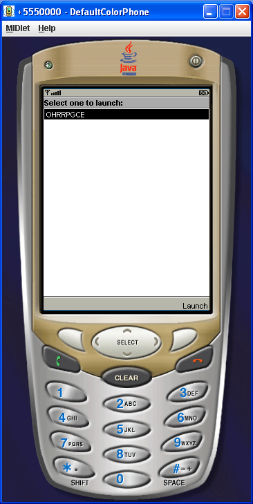
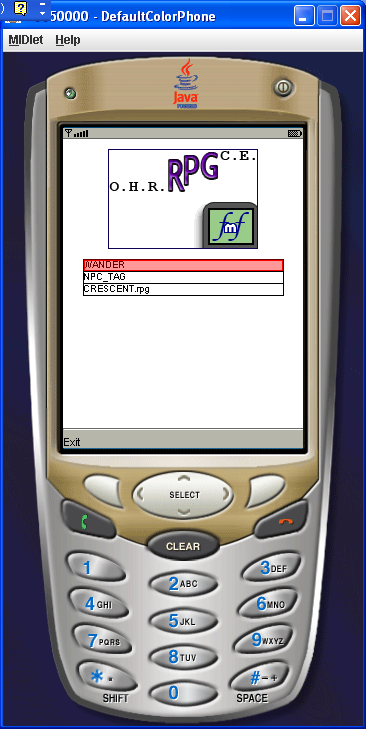
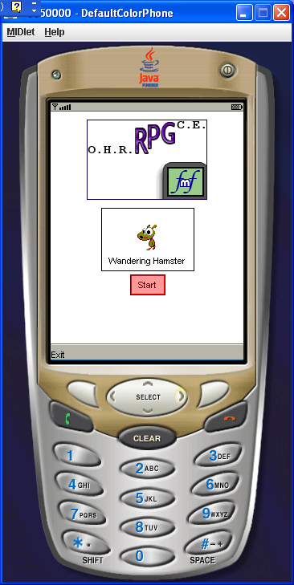
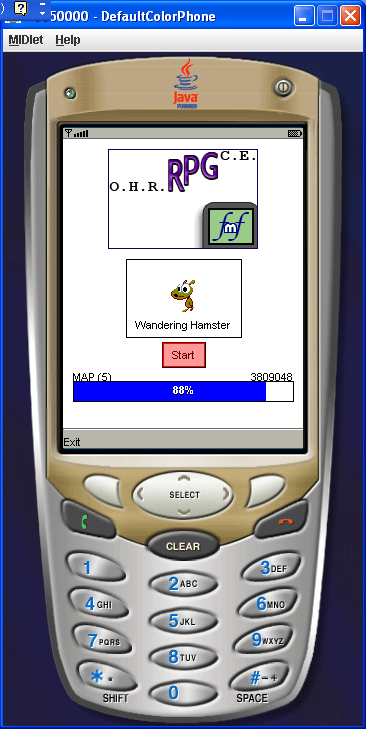
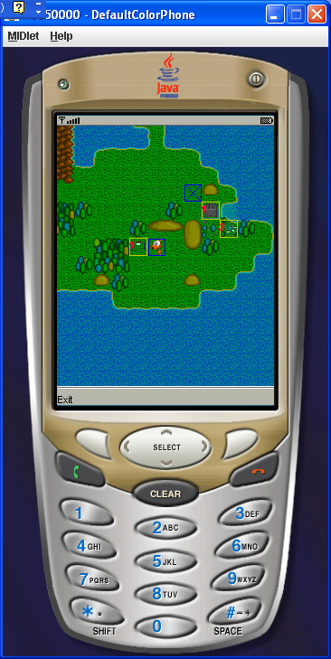
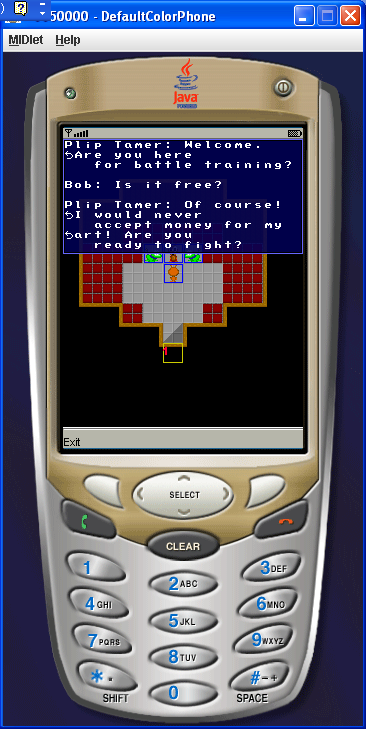
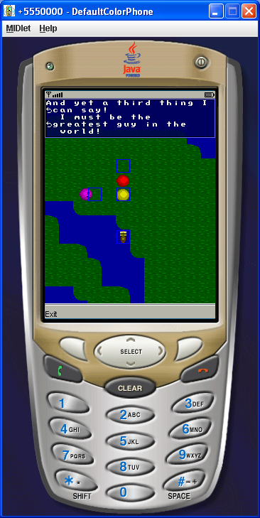

OHRRPGCEFMF Demo Alpha Amphitheatre
Readme
Super-Fast Overview & License Information
The OHRRPGCEFMF is an Open-Source port of the OHRRPGCE's GAME.EXE to the J2ME platform. It is licensed under the GPL, with the added stipulation that any intent to change or branch the source code be reported at least once to the OHRRPGCE developers either on the talk page of the Wiki or by email (sorlok_reaves@yahoo.com). This code is provided as-is; the only guarentee is that there will always be at least one bug in the code. Any third-party libraries/emulators included with the source code maintain their own licenses, and every intent has been made to comply with them.
Running on an Emulator
The "bin" folder contains compiled .jad and .jar files (since compiling J2ME applications from source can be confusing.) It also contains the default Netbeans emulator, just for convenience. Note that this emulator only works under Windows, but any J2ME emulator (except the newest Nokia prototype) should run the jar/jad files. Open an MS dos prompt and browse to the bin directory. Now type:
emulator.exe -Xdescriptor:GAME_FMF.jad -Xheapsize:20M
The heapsize is necessary to keep your emulator from running out of memory. At this point, the emulator should open in a seperate window, displaying your Midlet:

Hit Enter (or use the mouse to hit the phone's upper-right button) to select the OHRRPGCEFMF. At this point, the program will launch. If nothing crashes, you should see:

Use the arrow keys to selecta game, and hit "Enter" to launch it. (Alternatively, use 2,4,6,8 and 5 on the mobile keypad.) Now, you'll be asked to confirm (see below-left). Hit Enter, and a progress bar will appear (see below-right). The three games provided with the OHRRRPGCEFMF at this point are Wandering Hamster, a modification of the NPC Tags tutorial, and Crescent Dream (which doesn't work).

Eventually (a white "L" in a red circle may appear; just keep waiting) the game's starting map will be displayed. Walk around! If any NPCs are around, they will be walking at a constant rate (whoops!) and will be outlined in blue. Doors between maps are outlined in yellow. NPCs with no graphics have blue Xs through them.

Move with the arrow keys, and hit Enter to talk to NPCs or ride/alight vehicles. Note that message boxes will force in newlines (the little arrowy-things) to prevent text from scrolling off the side of your phone, if your display is small or vertical in nature. It is technically possible to scroll off the bottom of the screen, but this would require a very unfortunately-crafted message.

Try the NPC_TAG game, as it showcases a large number of the features added specific to this version of the OHRRPGCEFMF; for instance, vehicles, tags, and conditionals:

Problems
The program should run as described on this emulator; if you copy the jar/jad files to your phone, it should also work just dandy. Note that average loading time on a decent phone is 12 seconds.
Remember, this is an alpha demo, which means "It doesn't work." Even the standards of the game_list file will probably change before the first release, with absolutely no regard for backwards compatability.
Note that some weird glitch maps the hero's graphics onto the white area in a vehicle. This will likely be the hallmark bug of this release, since I have no idea how it could possibly do this.